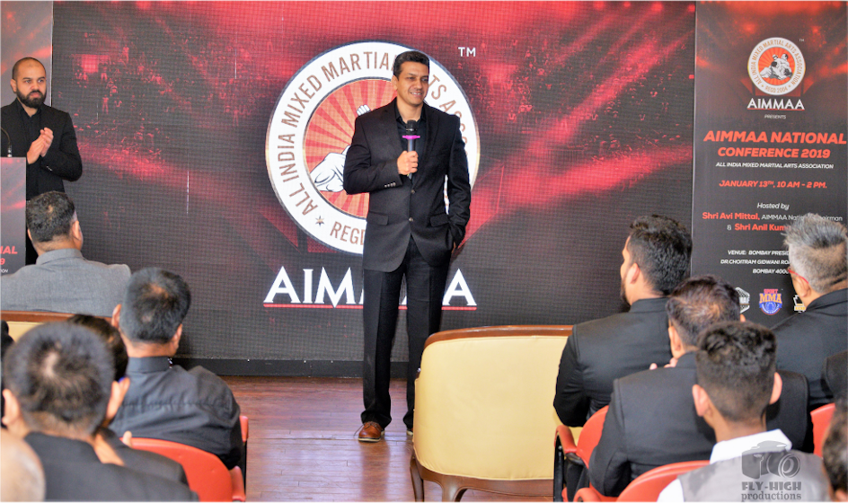

Dan Isaac is widely regarded as the original forerunner and pioneer for Mixed Martial Arts in India: he founded India's first ever mma training center for amateur and professional mma fighters in 1998, he hosted and organized International amateur and professional mma shows when these were non-existent in the country.

He travelled across the country providing training, education and information about MMA to Indian martial artists through seminars and workshops and this work laid the foundations for the sport becoming main-stream in India two decades later. His seminars entitled "The Business of MMA" has helped numerous martial arts Instructors to make the transition from traditional martial arts schools to MMA gyms.
Dan was the prime focus of India's first MMA documentary film entitled "MMA India: Fighting for a dream" available on YouTube. Between 2012 and 2015 Dan was first the COO and then the CEO of India's first mainstream MMA promotion 'Super Fight League' led by Sanjay Dutt and Raj Kundra.